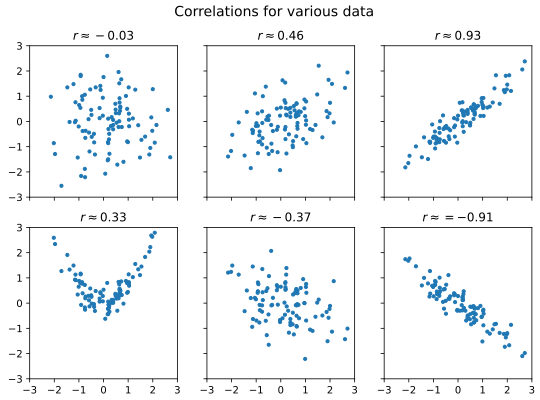

Linear regression#
# initialization
import numpy as np
import pandas as pd
import matplotlib.pyplot as plt
Conceptual foundations of linear regression#
Often times we are interested in how one variable depends on another. The simplest dependence of such kind is a linear relationship. However, because of measurement uncertainty and inherit variation in variables not captured by the dependency being studied, when we plot the data in scatter plot, they seldom fall onto a literal straight line.
As an example, suppose we measured the heights (in cm) and weights (in kg) of a number of male American adults, we may obtain a dataset like the following:
heights = np.array([
160, 165, 164, 164, 171, 170, 156, 161, 164, 153
])
weights = np.array([
66.8, 93.0, 94.7, 81.9, 101.8, 113.6, 53.3, 64.7, 83.5, 61.1
])
When we plot the heights against the weights, we get the following:
fig = plt.figure()
ax = fig.add_subplot()
ax.scatter(heights, weights)
ax.set_xlabel("Height (cm)", fontsize=14)
ax.set_ylabel("Weight (kg)", fontsize=14)
plt.show(fig)
Notice that while the measurements don’t fall onto a literal straight line, there is a clear linear trend. So we may still want to associate the data with a “best fitted line”. But how do we do that?
A common strategy in such situation is to find a straight line of the form \(y = m x + c\) with slope \(m\) and intercept \(c\) such that the square error \(\sum_i \left( y_i - (m x_i + c) \right)^2\) is minimized (here \((x_i, y_i)\) are the individual data points). The procedure to do so is known as linear regression.
As it turns out, the linear regression procedure outlined above corresponds to a particular model of the relationship between \(x\) and \(y\). The relationship is:
At any given value of \(x\), the variable \(y\) is distributed as a Gaussian (a.k.a. normal) distribution with mean \(m x + c\) and standard deviation \(\sigma\), where \(\sigma\) is the same across all values of \(x\)
In applying linear regression, it is important to check that the model assumption is plausible. For example, while there are clear relationship between \(x\) and \(y\) below, a linear regression will not be appropriate.
x = np.array([
5.2, 5.7, 0.3, 1.7, 6.9, 8.3, 3.1, 8.9, 7.2, 1.9,
5.5, 3.5, 1.8, 7.9, 9.7
])
y = np.array([
5.5, 6.3, 12.3, 8.1, 10.3, 12.8, 4.9, 17.2, 9.8, 7.0,
6.2, 5.3, 8.5, 13.2, 22.3
])
fig = plt.figure()
ax = fig.add_subplot()
ax.scatter(x, y)
plt.show(fig)
Linear regression in python#
In python, linear regression is implemented by the linregress() function in the scipy.stats submodule of the third-party python module scipy (generally, scipy has a collection of tools for scientific computing and numerical calculations, and is built on top of numpy).
Since we’ll use only this specific function from the scipy.stats, we will import it directly as:
from scipy.stats import linregress
Now, when we apply linregress() on the height and weight data above, we obtain:
wt_h = linregress(heights, weights)
print(wt_h)
LinregressResult(slope=3.2126420454545452, intercept=-441.57812500000006, rvalue=0.9161407489976452, pvalue=0.00019534135276194468, stderr=0.4969862092877473, intercept_stderr=80.95232605206309)
The slope and intercept attributes of wt_h has the meaning you’d expect. In other words, we found that the best fit line between heights (in cm) and weights (in kg) is:
weight = 3.21 * height − 441
To draw the best-fitted line on the plot we already have, we need to generate a new data series using the slope and intercept. For our example,
height_fit = np.array([ np.min(heights), np.max(heights) ])
weight_fit = wt_h.slope * height_fit + wt_h.intercept
fig = plt.figure()
ax = fig.add_subplot()
ax.scatter(heights, weights, label="data")
ax.set_xlabel("Height (cm)", fontsize=14)
ax.set_ylabel("Weight (kg)", fontsize=14)
ax.plot(height_fit, weight_fit, color="red", linestyle="--", label="best fit")
ax.legend()
plt.show(fig)
Correlation coefficient \(r\)#
The third value returned by linregress() is the Pearson’s correlation coefficient \(r\). It is a dimensionless number that tells us how strongly the two variables are related to each other. (We’ll ignore the rest of the values return by linregress(), since these values are associated with inferential statistics and require more sophistication to interpret).
Mathematically, the Pearson’s correlation coefficient is defined as:
In general, \(r\) can takes any value between −1 and 1. If the association between \(x\) and \(y\) are negative (i.e., when the regression slope is negative), \(r\) will be negative. Conversely, if the association is positive (positive slope), \(r\) will be positive. Furthermore, the closer the value of \(|r|\) is to 1, the stronger is the association.
The figure below illustrates various data with different level of correlation (you can download the data behind the plot here.):

As a rule of thumb, we may call correlation with \(|r| < 0.3\) weak, \(|r| > 0.7\) strong, and values in-between moderate. However, do note that correlation is not causation.
In the case of the height versus weight example, we have \(r \approx 0.9\), so the association is strong and positive.
Coefficient of determination \(R^2\)#
In the specific case of linear regression, the square value of \(r\) also has a nice interpretation. Recall that the (sample) variance of a variable \(y\) is defined as:
Thus, let \(\hat{y}_i = m x_i + c\) be the predicted value of \(y_i\) based on the linear regression. We may say that the variance explained by the regression is:
Similarly, we may define the residual variance to be:
We may then define the portion of variance explained to be:
where the derivation (the \(= \ldots =\) part) rely on the fact that \(m\) and \(c\) are obtained from least square procedure. In this context, \(R^2\) is known as the coefficient of determination.
For the specific case of linear regression, it turns out that \(r^2 = R^2\). Thus, the square of rvalue can also be interpreted as the proportion of variance explained by the linear regression.
In the case of our height versus weight data, we have:
wt_h.rvalue**2
0.8393138719739663
Thus, about 84% of the weight variation is explained by the height variation.
Linear regression on time series in python#
Using linregress() on time series presents particular challenge in python because of the peculiarity of datetime representations in python. As an example, let’s consider the time series of ocean surface temperature anomaly. The data came from Copernicus Marine Service’s Global Ocean Sea Surface Temperature time series. We convert this data into a csv format, which you can download from here.
To start, we load the csv file into pandas dataframe:
surf_temp = pd.read_csv("data/ocean_surface_temp_1993-2021.csv", parse_dates = ["time"])
surf_temp.info()
<class 'pandas.core.frame.DataFrame'>
RangeIndex: 348 entries, 0 to 347
Data columns (total 2 columns):
# Column Non-Null Count Dtype
--- ------ -------------- -----
0 time 348 non-null datetime64[ns]
1 sst_anomaly 348 non-null float64
dtypes: datetime64[ns](1), float64(1)
memory usage: 5.6 KB
Here is what the data looks like in a plot
fig = plt.figure()
ax = fig.add_subplot()
ax.plot(surf_temp["time"], surf_temp["sst_anomaly"])
ax.set_xlabel("Date", fontsize=12)
ax.set_ylabel("surface temperature anomaly (K)", fontsize=12)
plt.show(fig)
If we attempt to perform linear regression as-is, we’ll get an error:
linregress(surf_temp["time"].values, surf_temp["sst_anomaly"].values)
---------------------------------------------------------------------------
UFuncTypeError Traceback (most recent call last)
Cell In[12], line 1
----> 1 linregress(surf_temp["time"].values, surf_temp["sst_anomaly"].values)
File ~\miniforge3\envs\learn\Lib\site-packages\scipy\stats\_stats_py.py:10708, in linregress(x, y, alternative)
10704 raise ValueError("Cannot calculate a linear regression "
10705 "if all x values are identical")
10707 n = len(x)
> 10708 xmean = np.mean(x, None)
10709 ymean = np.mean(y, None)
10711 # Average sums of square differences from the mean
10712 # ssxm = mean( (x-mean(x))^2 )
10713 # ssxym = mean( (x-mean(x)) * (y-mean(y)) )
File ~\miniforge3\envs\learn\Lib\site-packages\numpy\core\fromnumeric.py:3504, in mean(a, axis, dtype, out, keepdims, where)
3501 else:
3502 return mean(axis=axis, dtype=dtype, out=out, **kwargs)
-> 3504 return _methods._mean(a, axis=axis, dtype=dtype,
3505 out=out, **kwargs)
File ~\miniforge3\envs\learn\Lib\site-packages\numpy\core\_methods.py:118, in _mean(a, axis, dtype, out, keepdims, where)
115 dtype = mu.dtype('f4')
116 is_float16_result = True
--> 118 ret = umr_sum(arr, axis, dtype, out, keepdims, where=where)
119 if isinstance(ret, mu.ndarray):
120 with _no_nep50_warning():
UFuncTypeError: ufunc 'add' cannot use operands with types dtype('<M8[ns]') and dtype('<M8[ns]')
Internally, pandas datetimes is stored as a 64-bit integers. So one way to get around the problem is to explicityly cast the datetime values into integers, like so:
regress = linregress(surf_temp["time"].values.astype("int64"), surf_temp["sst_anomaly"].values)
Now the line runs without error but the fit results become quite hard to interpret:
print(regress)
LinregressResult(slope=4.719764222235652e-19, intercept=-0.4939024523218635, rvalue=0.819954624538679, pvalue=7.749079818621919e-86, stderr=1.7713880082111528e-20, intercept_stderr=0.021475751292749274)
Nevertheless, if we want to plot the best-fitted line all we have to do is to make sure we perform the same conversion in our “prediction” step:
date_range = pd.Series([surf_temp["time"].min(), surf_temp["time"].max()])
temp_range = date_range.astype("int64") * regress.slope + regress.intercept
fig = plt.figure()
ax = fig.add_subplot()
ax.plot(surf_temp["time"], surf_temp["sst_anomaly"], label="data")
ax.plot(date_range, temp_range, ls="--", label="best-fitted line")
ax.set_xlabel("Date", fontsize=12)
ax.set_ylabel("surface temperature anomaly (K)", fontsize=12)
ax.legend()
plt.show(fig)
To express the slope in a more meaningful way, we note that in-principle the slope is just the temperature change divided by the date change. Doing this calculation naively again produce an error:
(temp_range[1] - temp_range[0]) / (date_range[1] - date_range[0])
---------------------------------------------------------------------------
TypeError Traceback (most recent call last)
Cell In[18], line 1
----> 1 (temp_range[1] - temp_range[0]) / (date_range[1] - date_range[0])
TypeError: unsupported operand type(s) for /: 'numpy.float64' and 'Timedelta'
This time, the solution is to express the date change as (fractional) number of days. The object (date_range[1] - date_range[0]) is a pandas TimeDelta object, which has a .days attribute (there are also .hours and .minutes attributes). So we can do:
slope_day = (temp_range[1] - temp_range[0]) / (date_range[1] - date_range[0]).days
print(slope_day)
4.077876288011604e-05
The slope above now has the more intuitive unit of K/day. Unfortunately, TimeDelta object does not have a .year attribute (because length of year is not uniform), but we can do the conversion ourselves to get the rate per year (note that in the Gregorian calendar a year is on average 365.2425 days):
slope_year = slope_day * 365.2425
print(slope_year)
0.014894137301240784
Thus the rate of ocean temperature increase is approximately 0.015 K per year.
One final remark: because correlation is dimensionless, the value we obtained from the linear regression is immediately usable. For example, the correlation of temperature anomaly with date is simply:
print(regress.rvalue)
0.819954624538679